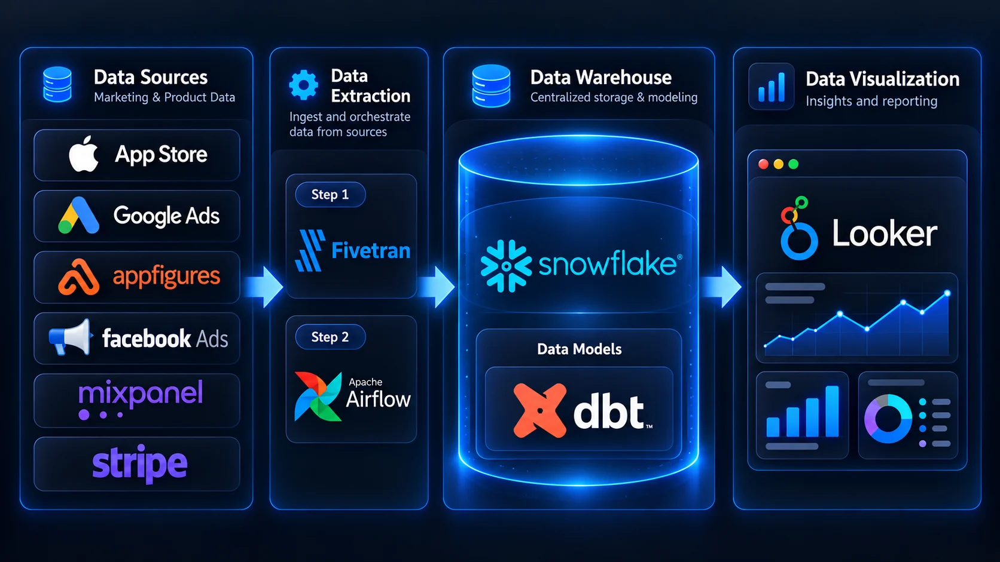

Case 1 · SaaS mobile app
From manual Excel reports to hourly data.
Problem
Analysts downloaded data from each platform by hand and pasted it into one big Excel file. Keeping reports updated cost them hours.
Solution
Snowflake warehouse, Fivetran for fast ingestion, dbt models in 3 layers (raw, stage, mart) with quality checks, and Looker dashboards.
Result
Strategic decisions on fresh data within 1 month. Fivetran was later replaced by Airflow to cut costs, and new sources were added.

1 month
to the first data-driven decisions
Hourly
data refresh in the dashboards
2 stages
Fivetran first, Airflow later